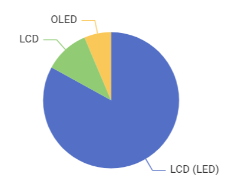
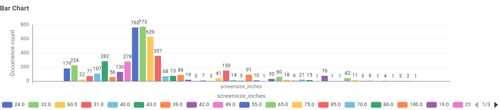
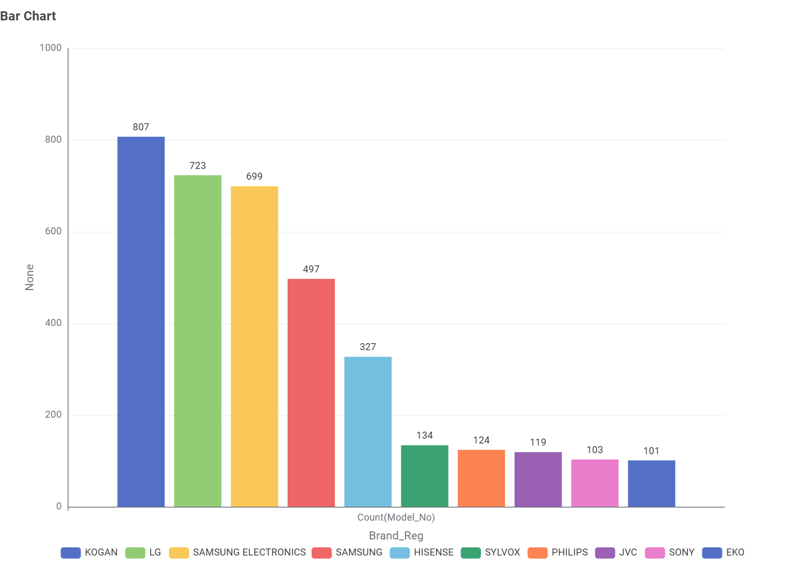
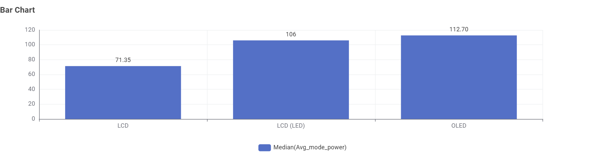
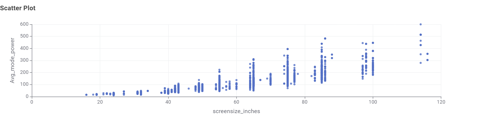
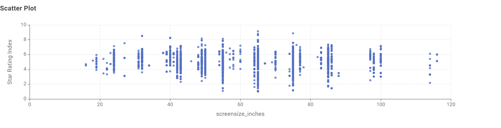
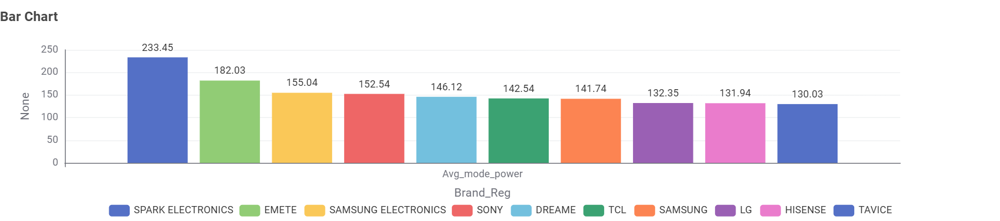

Television Energy Consumption Analysis
1. What type of TV screen technologies are currently available in Australia and which are the most frequent?
Answer: The available screen technologies in the Australian market are LCD, LCD (LED), and OLED. Among these, LCD (LED) is by far the most frequent technology, dominating the market share over standard LCD and OLED.

2. What screen sizes are currently available, and which are the most frequent?
Answer: Screen sizes range widely from small monitors (around 24 inches) to massive displays (over 85 inches). The most frequent sizes available are standard living room dimensions, specifically 32-inch, 24-inch and 60-inch models.

3. Which brands have the greatest number of different models?
Answer: The market is highly competitive, but brands like Samsung, Kogan, Hisense, and LG offer the greatest number of different television models to consumers.

4. Which type of screen technology consumes the least amount of power?
Answer: Based on the median average mode power, standard LCD screens consume the least amount of power (approx. 69W), followed by LCD (LED), while OLED models tend to have the highest median power consumption (approx. 113W).

5. What is the relationship between screen size and power use?
Answer: There is a strong positive correlation between screen size and power use. As the physical size of the television increases, the average mode power consumption increases proportionally.

6. What is the relationship between star rating and screen size?
Answer: The relationship is somewhat dispersed, but mid-to-large screens (like 55" and 65") show a wide variation in star ratings. Extremely large screens often struggle to achieve the highest star ratings due to their high absolute power draw.

7. Are there differences in power consumption between brands?
Answer: Yes, there are significant differences. Some brands maintain a tight, optimized power consumption profile across their range, while other brands (especially those offering very large or high-brightness models) exhibit a much wider spread and higher overall median power usage.
